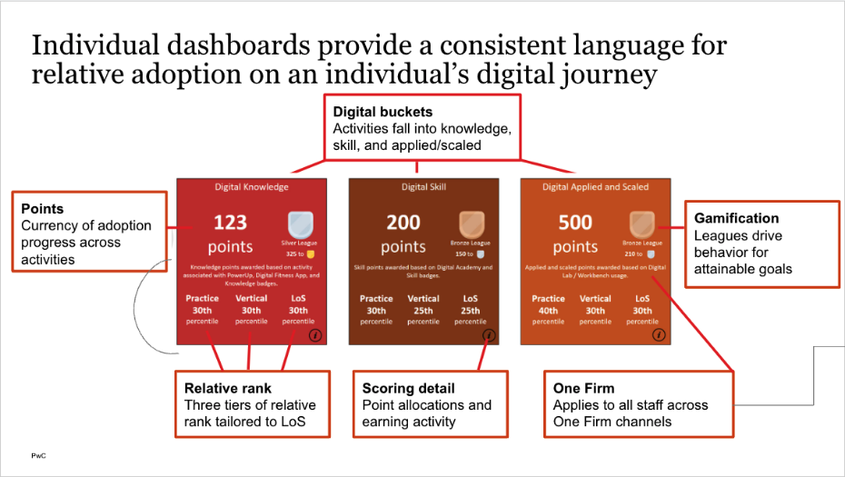
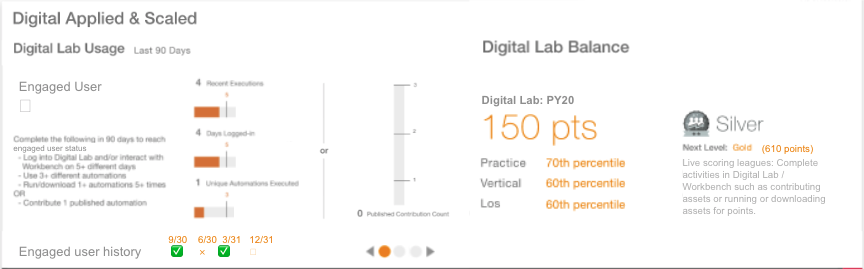
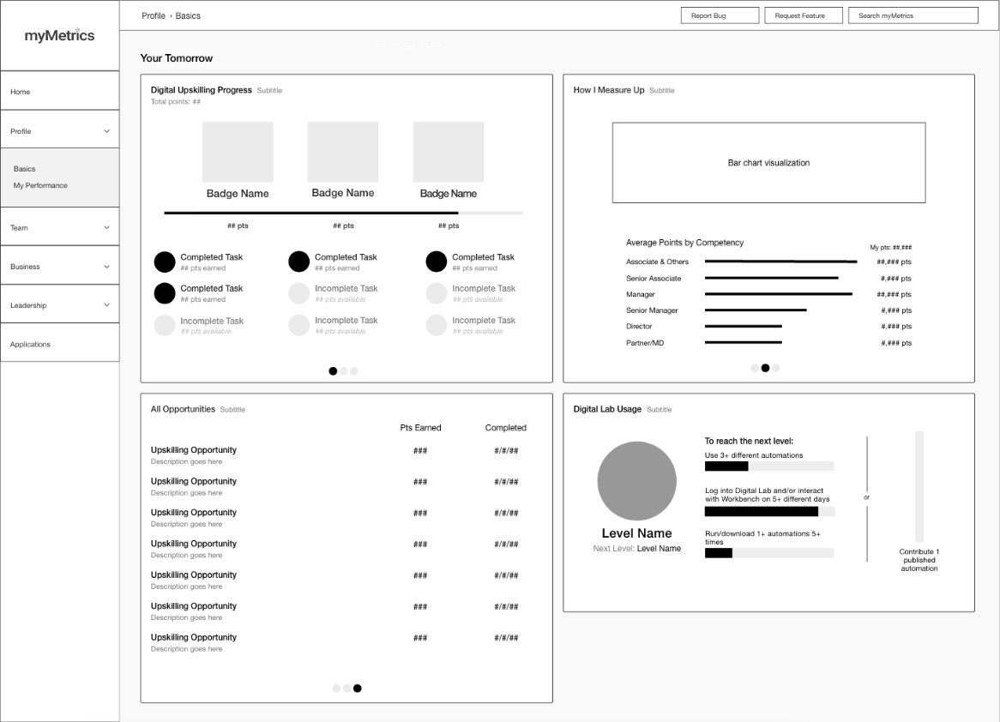
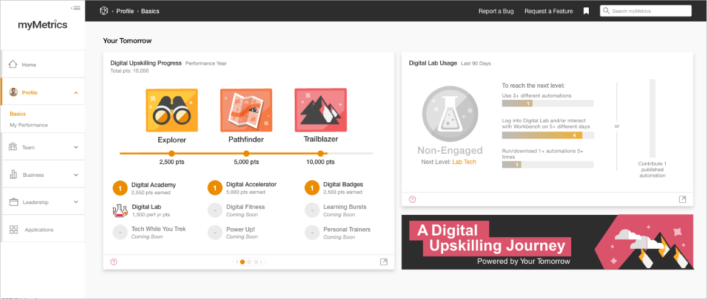
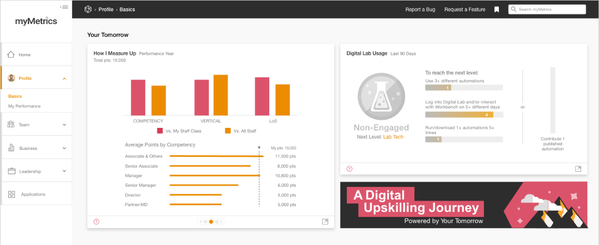

Understanding the Challenge
The project began with research and an initial mockup provided by stakeholders. My task was to translate those inputs into a dashboard within myMetrics, bringing together employees’ points, levels, and peer comparisons so they could monitor progress through the Your Tomorrow digital upskilling program.
We need a way for users to monitor their progress through the Your Tomorrow upskilling program in the myMetrics application.


Making Progress Feel Rewarding
Stakeholders supplied the metrics, but how to turn them into a satisfying, gamified experience was a design problem I needed to solve. I wanted employees to see more than a set of scores: the visuals needed to communicate that the goal was to keep making progress.
I explored several ways to visualize progress, working through different ideas with stakeholders before we settled on the direction shown here. That meant bringing points, levels, and peer comparisons together into an experience that made progress understandable.
The layout added another constraint: all of this information needed to fit into two cards on a single page. I worked through how to organize the content within those cards and their carousel pages, balancing the amount of information with the space available.
Writing out the user stories helped me keep track of the comparison requirements: employees needed to see their percentile within their competency, vertical, and line of service, both among their staff class and across all staff.

The Shipped Dashboard
I iterated on the dashboard’s interactions, data visualizations, point totals, and empty states, and designed the graphic badges used for gamification. I then handed the designs off to the development team. The dashboard launched within myMetrics and was available to 55,000+ PwC employees across the United States and Mexico.

